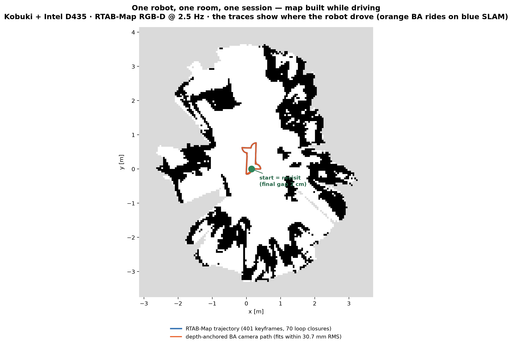
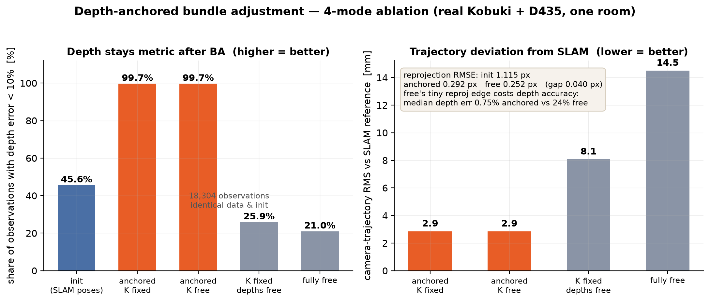
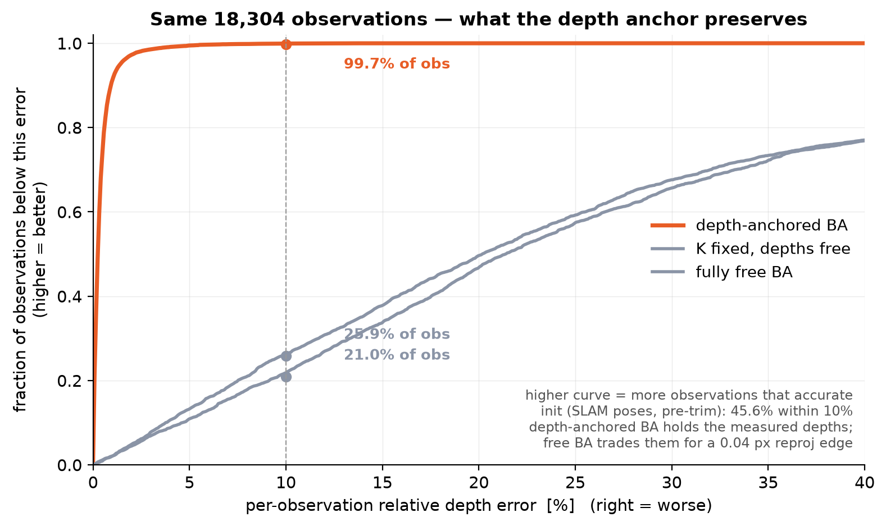

06 / Real hardware · depth-anchored BA
Free bundle adjustment trades the robot's measured depth away for reprojection — anchoring every observation keeps the map metric. Same 18,304 observations, same init, only the cost differs.
The simulation twin (p08 drive) made the case; the robot answers it on hardware. Result first, from the 18,304-observation ablation drive: the robot's own photos with every depth claim marked, all observations as measured-vs-claimed depth, and the measured room rebuilt in 3-D with real colours — free BA's claims streak metres off the measurement, depth-anchored BA's sit on it. Median claimed-vs-measured gap 0.71 m vs 0.024 m; 99.7% of measured depth kept vs 21.0%.
The procedure behind those claims: an annotated hardware drive — two laps so every wall gets re-observed — while RTAB-Map builds the map live (401 keyframes, 70 loop closures). That drive's bag feeds a depth-anchored bundle adjustment: 27,755 observations, reprojection 0.326 → 0.219 px, 99.9% of measured depth kept, trajectory within 3.1 cm RMS of the SLAM reference — the numbers above. The result video's 18,304-observation run and the 4-mode ablation below come from a second drive through the same pipeline. On screen: the D435 feed with depth inset, the growing grid with trail and field-of-view wedge, a live event feed (loop-closure bursts, turn completions, revisits) and BA result tiles.

The second drive runs the ablation matrix: free, anchored, and the two hybrid costs, over the same 18,304 observations with the same initialization. Anchoring costs +0.04 px reprojection against free BA and buys back 99.7% of the measured depth — the CDF shows what that trade looks like per observation.


The depth-anchored BA results are real hardware, from two drives: the annotated drive (27,755 trimmed observations) and the ablation drive (18,304 observations). RTAB-Map's optimized poses are the reference the BA trajectory is measured against — a consistency check against the same SLAM system, not independent ground truth. The trimmed sets cover the earlier part of each drive, so the BA tiles in the video are final numbers, not a live curve.
The comparison is one ablation, not two systems: same observations, same initialization, only the depth term differs. Only the 2,105 landmarks carrying observations move between the two solutions; the dense room on screen is the measured map, identical in both panels of the video.